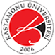

KASTAMONU ÜNİVERSİTESİ
Kastamonu Üniversitesi, Kastamonu, Türkiye'de yer alan, 2006 yılında kurulmuş bir devlet üniversitesidir. Kastamonu Üniversitesi bugün 13 Fakülte, 2 Enstitü, 4 Yüksekokul, 13 meslek yüksekokulu, 35 bölüm ile akademik etkinliklerini sürdürmektedir. Yerleşkelerinde Osmanlı döneminden kalan tarihi binalarda hâlen eğitim yapılmaktadır.
Kastamonu Üniversitesi, 16.894 lisans ve 4452 lisansüstü öğrenci ve 810 öğretim elemanı ile eğitim hayatını sürdürmektedir.
Üniversitenin özgörevi, öğretim, araştırma ve toplum hizmetleri etkinliklerini evrensel standartlarda yürüterek, toplumun ve insanlığın toplumsal, kültürel, ekonomik, bilimsel ve teknolojik gelişimi için bilgiye ulaşmak, bilgiyi üretmek, uygulamak, yaymak ve bu bilgilerle donatılmış bireyler yetiştirmek, temel ilkeleri ise bilimsel yaklaşım, akademik özgürlük,
disiplinlerarası yaklaşım, yaşam boyu eğitim, nitelikli insan yetiştirme, öğrenciye destek, toplumla iletişim ve katılımcı yönetimdir.
Kuruluş
Kastamonu Üniversitesi; 17 Mart 2006 tarihli Bakanlar Kurulu kararıyla 5467 sayılı yasayla kurulmuştur. Kastamonu'da bulunan fakülte ve yüksekokullar Gazi Üniversitesi ve Ankara Üniversitesinden ayrılararak Kastamonu Üniversitesi çatısı altında toplanmıştır ve üniversite 2006-2007 öğretim yılında öğretim ve araştırma çalışmalarına başlamıştır.
İlk yıllar
Kastamonu Üniversitesinin kurucu rektörlük görevini Gazi Üniversitesi eski rektörü Prof. Dr. Kadri Yamaç yürütmüştür. 2007-2008 Eğitim Öğretim döneminde Tıp Fakültesi Hacettepe Üniversitesine bağlı olan Kastamonu Tıp Fakültesi olarak eğitimi sürdürmektedir, 2020-2021 öğretim yılından sonra fakültenin Kastamonu Üniversitesine bağlanması öngörülmektedir.
Üniversitelerarası kurula Erasmus başvurusu, Kasım 2007'de yapılmış ve 2008 yılında bu başvuru onaylanmış ve Üniversite birliğe katılmıştır.
2009 güz döneminde yurt dışı üniversiteleriyle ilk öğrenci değişimleri yapılmıştır. 2009 yılında yurt içi üniversiteleriyle Farabi değişim birliğine katılmıştır.
Son dönem
Kastamonu Üniversitesinin şu andaki rektörü Prof. Dr. Ahmet Hamdi TOPAL'dır. Üniversitede toplam 30.150 öğrenci öğrenim görmekte olup, 810 Akademik Çalışan ve 159 Yönetimsel Çalışan görev yapmaktadır. Yerleşke yapılaşma ve ormanlaştırma çalışmaları hızla sürmekte olan Kastamonu Üniversitesi, şu anda 13 Fakülte, 2 Enstitü, 4 Yüksekokul, 13 meslek yüksekokulu, 35 bölüm ile eğitim-öğretim çalışmalarına devam etmektedir.
Üniversite Kurulunun kararı, Yükseköğretim Kurulunun onaylamasıyla; İletişim Fakültesi, Mühendislik Fakültesi, Mimarlık Fakültesi, Diş Hekimliği Fakültesi, İktisadi ve İdari Bilimler Fakültesi, Turizm İşletmeciliği ve Otelcilik Yüksekokulu ile Abana, Araç, Bozkurt, Cide, İnebolu, Taşköprü ve Tosya ilçelerine Meslek Yüksekokulu açılması çalışmaları sürdürülmektedir.
Bu birimlerden İktisadi ve İdari Bilimler Fakültesi, Turizm İşletmeciliği ve Otelcilik Yüksekokulu, Cide Rıfat Ilgaz Meslek Yüksekokulu, Kastamonu Meslek Yüksekokulu, İnebolu Meslek Yüksekokulu, Tosya Meslek Yüksekokulu; yapıları, öğretim görevlileri, tüm çalışmaları tamamlanarak eğitim-öğretime başlamıştır.
Yerleşke
Üniversitenin ana yerleşkesi, Daday Yolu 3. kilometre'de bulunan "Kuzeykent Yerleşkesi"dir. Yerleşke içerisinde 1 Meslek Yüksekokulu yapısı, Konferans Salonu, Kapalı Spor Salonu, 10 Laboratuvar ve Atölyeler, Araştırma Merkezleri, Sosyal Tesisler, Kapalı/Açık Spor Alanları, Yeni Yurt Yapıları ve daha önce yurt olarak kullanılan daha sonra Rektörlük Yönetim Birimlerine verilen 2 yapı bulunmaktadır.
Yerleşke alanı yaklaşık 800 dönüm’dür, Ayrıca Kastamonu Valiliği ve Belediye Başkanlığınca ortaklaşan yürütülen çalışmalar sonucunda yerleşke alanının 2800 dönüme çıkarılması planlanmış ve bu konuyla ilgili çalışmalarda sonuç aşamasına gelinmiştir. Ayrıca bütün fakülteleri Kuzeykent Yerleşkesi'nde toplama çalışmaları devam etmektedir. Proje çizimleri 2009 yılında bitirilip yapı çalışmalarına başlanmıştır.
Yerleşkede yurtlar, alışveriş için çarşı, bankalar, postane ve yiyecek-içecek alınabilecek yerler vardır. Yerleşkede ayrıca, çeşitli spor etkinliklerini yürütebilmek için kapalı spor salonları, tenis kortları, futbol sahaları, koşu yolları gibi yapılar bulunmaktadır. Yerleşke dışında yazın tırmanma ve dağcılık sporunun, kışın ise kayak etkinliklerinin yapılabileceği yapılar bulunmaktadır.
Yurtlar
KASÜ yerleşkesi içinde toplam 10 yurt, 2 konukevi bulunmaktadır. Yurtların bulunduğu bölgede spor alanları, spor salonları, futbol, basketbol sahaları, topluluklar barakası ve tenis kortları bulunmaktadır. Bundan başka yerleşkede alışveriş merkezi ve banka şubeleri ile internet erişimi bulunmaktadır. Yurtlarla kent merkezi arasında ulaşım, 07:00 - 24:00 saatleri arasında dolmuş ve belediye otobüsleri ile yapılmaktadır.
Ayrıca belli saatlerde yurtlardan bölümlere dönüşümlü servis yapılması planlanmaktadır.
Yurtlara, ailesi Kastamonu dışında yaşayan öğrenciler başvurabilir. Yurtlarda kalan öğrencilerin en geç 22:00'da yerleşkede olmaları gerekir. Yurtlara son giriş saati 22:00'dır.
Spor olanakları
Çok çeşitli spor olanaklarının bulunduğu üniversitede öğrenciler spor etkinliklerine değişik düzeylerde katılabilirler. Etkin sporcular ya da ilgilendikleri spor dallarında kendini geliştirmek isteyen öğrenciler, danışman desteğiyle, çalıştırıcı gözetiminde çalışabilirler. Ayrıca, her öğrenci spor etkinliklerine bireysel olarak katılabilir.
Tarihi Rektörlük Binası
Tarihi yapının 1885 yılında yapımı bitmiş ve Türkiye'nin en eski üçüncü lisesi olan Kastamonu Lisesi olarak uzun yıllar eğitim öğretime devam etmiştir. Cumhuriyet döneminin en saygın eğitim kurumlarından olan Kastamonu Lisesi'ne 1927 yılında 65 okul numarasıyla yazar Rıfat Ilgaz kayıt oldu ve eğitimini burada tamamladı. Ünlü yapıtı Hababam Sınıfını okulda yaşadıklarını ve okul arkadaşlarını harmanlayarak yazdı.
Tarihi bina günümüzde Kastamonu Üniversitesi tarafından restore edilerek rektörlük binası olarak kullanılmaktadır.
Simge
Kastamonu Üniversitesi simgesinde Mustafa Kemal Atatürk'ün imzasında bulunan, aynı şekilde Kastamonu ilini temsil eden K harfi bulunur. İmzada bulunan K harfi kurumun Atatürk ilkelerinden ve Atatürk gençliğinden aldığı gücünü temsil eder. Simgedeki renkler kırmızı, siyah ve beyazdır. Simgedeki merkezde yoğunlaşan ve yayılan yarım daire Kastamonu Üniversitesinin bilgi ve bilim üreten ve yayan bir kurum olmasını temsil eder.